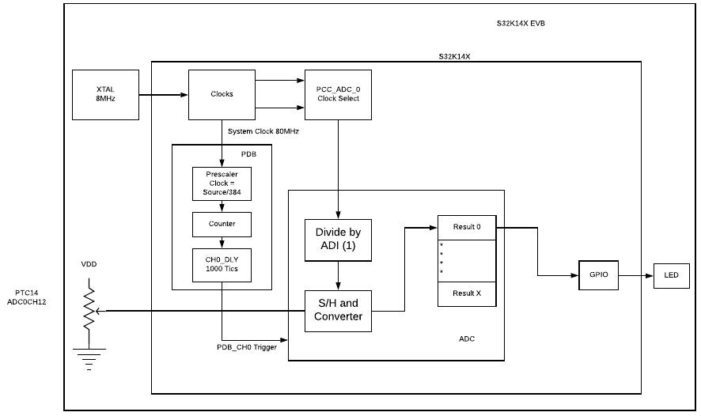

Description
The PDB module is used to trigger the ADC, it is a simple counter that generates a trigger signal after some delay
For this example the module is triggered by software, in continuous mode and a period of 9ms.

Design:
- Disable Watchdog
- System clocks: Initialize SOSC for 8 MHz, sysclk for 80 MHz, RUN mode for 80 MHz
- Enable Interruption for ADC
- Initialize PORT:
- Initialize hardware triggered ADC
- Use SOSCDIV2 as clock source
- Enable interrupt
- 12 bits Mode
- Initialize PDB:
- PDB clocking = SystemClock/(Mult*(2^Prescaler))
- 208.3 KHz = 80 MHz/(3*(2^7)
- PDB_MOD = 30000... Period = 144 ms
- Enable Software trigger
- Enable continous mode
- Enable PDB and load the MOD and Channel values
Pins definitions:
| Function | S32K116 | S32K118 | S32K142 | S32K144 | S32K146 | S32K148 |
| BLUE_LED | PTE8 | PTE8 | PTD0 | PTD0 | PTD0 | PTE23 |
| RED_LED | PTD16 | PTD16 | PTD15 | PTD15 | PTD15 | PTE21 |
| GREEN_LED | PTD15 | PTD15 | PTD16 | PTD16 | PTD16 | PTE22 |
Driver Functions
| Functions | Driver |
| PDB0_init | pdb |
| ::ADC_init_HWTrigger | adc |
When the PDB reaches the Channels Delay count, it will trigger the ADC and this will start a convertion.
There are 3 thresholds given, and depending on the ADC's readings, the LED's will change of color
| Scaled conversion result | LED iluminated |
| 3750 - 5000mV | Red |
| 2500 - 3750mV | Green |
| 1250 - 2500mV | Blue |
| 0 - 1250mV | None |
main.c
#include "S32K144.h"
#define PTD15 15
#define PTD16 16
#define PTD0 0
PCC-> PCCn[PCC_PORTD_INDEX] = PCC_PCCn_CGC_MASK;
PORTD->PCR[
PTD0] = 0x00000100;
PORTD->PCR[
PTD15] = 0x00000100;
PORTD->PCR[
PTD16] = 0x00000100;
}
WDOG->CNT=0xD928C520;
WDOG->TOVAL=0x0000FFFF;
WDOG->CS = 0x00002100;
}
{
S32_NVIC->ISER[1] = 1 << (ADC0_IRQn % 32);
ADC_init_HWTrigger(12);
for(;;)
{
}
}
{
volatile uint16_t ADC_result = 0;
if(ADC0->SC1[0] & ADC_SC1_COCO_MASK)
{
ADC_result=ADC0->R[0];
if (ADC_result > 3072) {
}
else if (ADC_result > 2048) {
}
else if (ADC_result >1024) {
}
else {
}
}
}
 1.8.15
1.8.15